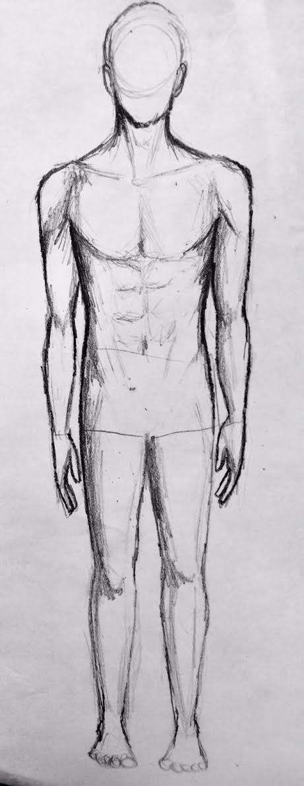
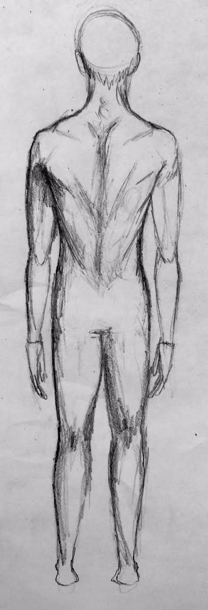

HOW TO DRAW ANATOMY
BBBBBBBBBBBBBngchgcgnfcngcnfHOW TO DRAW HANDSHOW TO DRAW HANDSHOW TO DRAW HANDSHOW TO DRAW HANDSHOW TO DRAW HANDSHOW TO DRAW HANDSHOW TO DRAW HANDSHOW TO DRAW HANDSHOW TO DRAW HANDSHOW TO DRAW HANDSHOW TO DRAW HANDSHOW TO DRAW HANDS
STEP 1:

The palm of our hands are shaped liked ovals. So the first step here would be to draw an oval. Fairly simple!
STEP 2:

Next Draw a trapazoid shape surrounding the oval, because our palms are not literally ovals. This will ultimately be the base in order to add on fingers in the next step.